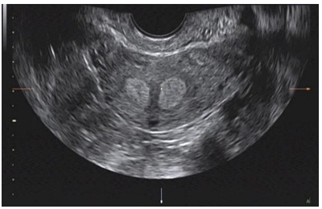

Questão 1 · Planejamento f amiliar · 4000184332Mulher, 25a, vem para avaliação de planejamento familiar após encaminhamento pela reumatologia. Apresenta ciclos menstruais com uxo aumentado e coágulos, com duração de 10 dias, nos últimos seis meses. Antecedentes: G0P0, menarca aos 15 anos, vida sexual ativa, parceiro único; tem diagnóstico de lúpus eritematoso sistêmico há três anos, em uso regular de hidroxicloroquina e metotrexato. hemoglobina=9g/dL, hematócrito=30%, leucócitos=2.000/mm³, plaquetas=60.000/mm³. Ultrassonografia pélvica: sem alterações em útero e ovários.
A Dispositivo intrauterino de cobre.
B Sistema intrauterino liberador de levonorgestrel.
C Anticoncepcional oral combinado com 30µg de levonorgestrel.
D Anticoncepcional oral combinado com 15µg de levonorgestrel.
Questão 2 · Planejamento f amiliar · 4000183455Paciente de 35 anos, G2P1A1 (ectópica tubária há 4 anos), veio ao ambulatório de ginecologia para solicitar a inserção de dispositivo intrauterino medicado com levonogestrel. Como antecedentes, informa ser portadora de enxaqueca com aura, fumante de 10 cigarros por dia. Além disso, teve uma trombos e venosa profunda na perda direita, há dois anos. Qual das condições acima representa contraindicação ao DIU medicado?
A Idade de 35 anos
B Gravidez ectópica
C Enxaqueca com aura
D Fumante de 10 cigarros/dia
E Antecedentes de TVP
Questão 3 · Métodos hormonais combinados · Anticoncepção hormonal apenas com progesterona · 4000183354Entre as progestinas abaixo, qual a que necessita ser bioativada para se ligar diretamente a receptor de progesterona?
A Levonorgestrel.
B Noretindrona.
C Desogestrel.
D Drospirenona.
Questão 4 · Anticoncepção em condições especiais · 4000182949Mulher de 15 anos comparece a Unidade Básica de Saúde, pois deseja iniciar um método anticoncepcional. AP: menarca aos 11 anos, sexarca há 1 ano, DUM há 2 dias. Nega comorbidades, tabagismo ou etilismo. Assinale a alternativa correta.
A Pedir para retornar com um responsável legal, pois a orientação e prescrição de métodos contraceptivos para menores de idade necessita da autorização ou ciência dos pais ou responsáveis.
B Todos os métodos contraceptivos podem ser usados, cabe ao profissional explicar sobre cada um para que a paciente possa escolher.
C Devido a idade a melhor alternativa seria o método de barreira, evitando possíveis alterações hormonais sobre a puberdade.
D O DIU está contraindicado pela idade precoce.
Questão 5 · Planejamento f amiliar · 4000182741Considerando-se os métodos abaixo, numerar a 2ª coluna de acordo com a 1ª, indicando respectivamente os que apresentam apresenta a sequência CORRETA: (1) Diafragma. (2) Endoceptivo de levonorgestrel. (3) Pílula de progestogênio, mini-pílula. (4) DIU de cobre. (5) Contracepção hormonal combinada. (_) Paciente entre 25-30 anos, parto normal há 4 meses, amamentando exclusivamente. (_) Paciente jovem sem parceiro fixo com história prévia de gestação ectópica. (_) Paciente com 40 anos, vida sexual ativa, fumante desde os 20 anos, média de 1 carteira e meia por dia. (_) Paciente com retocistocele grau II. (_) Paciente com 45 anos, saudável, dor em cólica importante durante o período menstrual e queixas de fluxo intenso.
A 5 - 4 - 5 - 1 - 4.
B 3 - 5 - 1 - 2 - 5.
C 5 - 2 - 3 - 1 - 4.
D 2 - 4 - 3 - 5 - 5.
Questão 6 · Anticoncepção em condições especiais · 4000182132Homem trans, 32 anos, hipertenso, comparece para consulta de rotina em UBS. Refere-se relacionar sexualmente com homem cisgênero, e atualmente está em uso regular de contraceptivo oral combinado (COC) contendo levonorgestrel (0,15 mg) + etinilestradiol (0,03 mg) para controle de sangramento vaginal volumoso. Refere ter iniciado o uso de testosterona em outro serviço há 2 meses. Exame físico: sem lesões ou achados anormais ao exame da genitália. Qual a melhor conduta clínica neste momento?
A Trocar para anel ou adesivo contraceptivo e suspender a testosterona.
B Prescrever análogo de GnRH e suspender temporariamente a testosterona.
C Substituir o COC por progestágeno isolado e manter a testosterona.
D Suspender o COC e manter apenas a testosterona.
Questão 7 · Interações medicamentosas · 4000181877Uma paciente com diagnóstico de epilepsia em uso de fenitoína 100mg de 08/08 horas, com bom controle das crises, deseja saber sobre métodos contraceptivos. Considerando as comorbidades da paciente e a medicação em uso, a melhor opção contraceptiva é:
A Dispositivo intrauterino de cobre.
B Contraceptivo transdérmico.
C Anticoncepcional oral combinado.
D Anel vaginal anticoncepcional.
E Orientar abstinência sexual.
Questão 8 · Planejamento f amiliar · 4000181743Mulher, 22 anos de idade, sem comorbidades, iniciou vida sexual recente, vai a consulta com médica da saúde da família na UBS. Gostaria de método contraceptivo de menor risco tromboembólico. A melhor opção para essa paciente, dentre as abaixo, é:
A Medroxiprogesterona.
B Drospirenona.
C Etinilestradiol e levonorgestrel.
D Estradiol e nomegestrol.
Questão 9 · Planejamento f amiliar · 4000181422Mônica, 37 anos, G1P1(vaginal há 1 ano), IMC 35, com episódio de TVP na gestação. Comparece a UBS para orientação contraceptiva. Relata que não consegue lembrar de usar medicação diariamente. Qual método mais indicado?
A Anel vaginal.
B Injetável mensal.
C Injetável trimestral.
D Desogestrel 75 mcg.
Questão 10 · Planejamento f amiliar · 4000181421Paulo, homem trans gay, 26 anos, comparece ao ambulatório de ginecologia, acompanhado de seu namorado José, um homem cis gênero de 30 anos, com quem começou a se relacionar há 5 meses. Paulo faz uso de testosterona e apresenta amenorreia há 2 anos. O casal encontra-se preocupado pois possuem um amigo homem trans que engravidou e eles costumam ter práticas de penetração vaginal. Desejam orientações sobre contracepção, assinale a alternativa correta.
A A laqueadura tubária está descartada, pois o paciente não tem filhos.
B Contraceptivos combinados estão contraindicados pelo risco aumentado de eventos tromboembólicos.
C Tranquilizar o casal, pois Paulo já está há muito tempo em amenorreia e homens trans só conseguem engravidar mediante tratamento hormonal específico.
D Poderiam ser ofertados como métodos contraceptivos: preservativo peniano, preservativo vaginal, diafragma, dispositivo intrauterino (cobre ou hormonal), uso de progestágenos isoladamente.
Questão 11 · Anticoncepção hormonal apenas com progesterona · Dispositivos intrauterinos · 4000181271Recomenda-se métodos contraceptivos de longa duração a todas as mulheres que desejam contracepção e caz, incluindo adolescentes, nuligestas, em pós-parto ou pós-aborto. Desse modo, assinale a alternativa que relata os métodos contraceptivos de longa ação.
A DIU e pílulas de uso contínuo.
B Injetável trimestral e anel vaginal mensal.
C DIU e implante contraceptivo de etonogestrel.
D Injetável trimestral e implante contraceptivo de etonogestrel.
E Adesivo anticoncepcional e pílulas de uso contínuo.
Questão 12 · Planejamento f amiliar · 4000177543O planejamento familiar é um direito sexual e reprodutivo, o qual assegura a livre decisão da pessoa sobre ter ou não lhos, não podendo haver imposição sobre o uso de métodos anticoncepcionais ou sobre o número de lhos. A Constituição Federal e a Lei n° 9.263, de 12 de janeiro de 1996 asseguram esse planejamento e o regulamentam, devendo ser garantido pelo governo. Conforme esses dispositivos legais,
A o implante subdérmico de etonogestrel é um método contraceptivo reversível de longa duração (3 anos), podendo provocar amenorréia.
B os anticoncepcionais orais de progestágeno isolado (desogestrel), empregados durante a amamentação, devem ser substituídos assim que diminuir a frequência das mamadas, pois eles terão sua eficácia comprometida na ausência dela.
C os anticoncepcionais orais combinados estão contraindicados para pacientes com familiares de primeiro grau com história de trombose venosa profunda, conforme os critérios de elegibilidade da OMS (2015).
D o DIU de cobre evita a ocorrência de distúrbios disfóricos pré-menstruais, pelo fato de não conter hormônios em sua composição, sendo indicado nesses tipos de sintomatologia.
Questão 13 · Planejamento f amiliar · 4000177447No acompanhamento do puerpério, durante o aleitamento materno, o contraceptivo hormonal, deverá conter
A somente estrógenos.
B somente progestágenos enquanto durar o aleitamento, não importando o período.
C contraceptivos hormonais de qualquer composição, durante o período de amamentação.
D pílulas combinadas de estrógenos e progestágenos com ultrabaixa dose.
Questão 14 · Planejamento f amiliar · 4000170638Ana foi à consulta de enfermagem com a intenção de discutir métodos contraceptivos. Ela tem dezesseis anos de idade, G0P0, enxaquecas com aura, ocasionalmente, e adenoma hepático descoberto em exame ocasional. Considerando, nesse caso hipotético, os critérios de elegibilidade para contraceptivos hormonais da OMS de 2015 e o índice de Pearl dos métodos contraceptivos, o melhor método para Ana seria o(a)
A pílula de estrogênio e progestágeno.
B espermicida.
C dispositivo intrauterino de cobre 380a.
D tabelinha (Ogino-Knaus).
E injetável trimestral.
Questão 15 · Métodos hormonais combinados · 4000170613Uma mulher de dezoito anos de idade iniciou as atividades sexuais com seu namorado e buscou um método contraceptivo, tendo preferência por anticoncepcional hormonal oral. Com base nesse caso hipotético, é correto a rmar que a escolha do método deve ser cuidadosa, porque
A o anticoncepcional oral combinado aumenta o risco de acidente vascular cerebral em mulheres com enxaqueca com aura.
B a presença de antecedente de infarto agudo do miocárdio em parente de primeiro grau contraindica o uso do anticoncepcional oral combinado.
C o DIU de levonorgestrel é uma boa opção para o controle de sangramento vaginal inexplicável.
D as pílulas de estrogênio isolado para mulheres com hipertensão, ainda que controlada (abaixo de 160 x 100 mmHg), estão contraindicadas.
E pílulas combinadas são contraindicadas para mulheres HIV positivas.
Questão 16 · Contraindicações · 4000169969Mulher procura o ambulatório de planejamento familiar, pois deseja inserir DIU de cobre. Assinale qual das condições listadas seria contraindicação dessa aplicação.
A NIC II de colo do útero.
B Recém-operada de Ca de mama.
C Portadora de mioma submucoso.
D Nuliparidade.
E Hipotireóidea em terapêutica com tiroxina.
Questão 17 · Contraindicações · 4000169547Paciente de 38 anos procura atendimento para orientação em relação ao uso de anticoncepcionais orais combinados. História médica pregressa sem qualquer alteração, mas refere ser fumante, consumindo uma média de 20 cigarros por dia. Apresenta níveis na medida da pressão arterial, durante a consulta, de 140/90. Exame físico geral e ginecológico sem alterações. Traz exames de laboratório compatíveis com dislipidemia: CT: 260mg/dL, e LDL: 140mg/dL. A orientação médica é contraindicar o uso de contraceptivos hormonais orais combinados pelos critérios de elegibilidade da OMS, primariamente devido à:
A Idade da paciente.
B Tabagismo.
C Níveis alterados de pressão arterial.
D Dislipidemia.
Questão 18 · Métodos comportamentais · 4000169424Um método de anticoncepção classificado como natural ou comportamental é o método do muco cervical ou de Billings. A respeito da fundamentação desse tipo de método, assinale a alternativa correta.
A A progesterona produzida pela ovulação faz com que o muco cervical se torne abundante e facilmente perceptível pela paciente.
B A subida do LH transforma o muco, tornando-o abundante e transparente.
C A produção estrogênica aumentada faz o muco cervical ser abundante, que é máximo no período ovulatório. Depois, por ação da progesterona, ele diminui.
D O teste de Billings é o método da tabelinha associado à temperatura basal.
E O aumento do FSH, do LH, do estrogênio e da progesterona determina, por ação sincrônica, o aumento do muco cervical.
Questão 19 · Planejamento f amiliar · 4000169287Mulher de 38 anos, tabagista, referindo uxo menstrual volumoso, nega comorbidades e deseja método contraceptivo da rede pública. No exame físico, PA 140/90 mmHg, IMC = 46,0 kg/m². Os exames atuais bioquímicos demonstram dislipidemia moderada, o ultrassom transvaginal mostra miomatose intramural com componente submucoso, o ultrassom de mamas mostra cistos mamários bilaterais, a citologia oncótica está normal. Qual opção mais adequada para contracepção disponível no serviço público (UBS)?
A DIU (dispositivo intrauterino) de Cobre.
B Contraceptivos hormonais orais combinados.
C SIU (sistema intra-uterino de levonorgestrel - 20 ng/24h).
D Acetato de medroxiprogesterona de depósito (injetável trimestral).
Questão 20 · DIU de cobre · 4000169077O DIU não-hormonal é considerado um método contraceptivo reversível de longa ação que pode estar muito bem indicado para mulheres
A multíparas com adenomiose e dismenorreia.
B multíparas com mioma que tenha mais de 50% de seu volume na região submucosa.
C multíparas com ciclos de intervalo de 25 dias e duração de 10 dias.
D nuligestas na faixa etária de 18 a 20 anos.
E nuligestas com síndrome de Von Willebrand.
Questão 21 · Planejamento f amiliar · 4000169016Considerando a melhor escolha para os métodos contraceptivos, assinale a alternativa correta.
A Anticoncepcional oral combinado não deve ser prescrito para paciente jovem de 20 anos de idade, sem patologias prévias
B Anel contraceptivo é uma boa opção para paciente sem patologias, que esquece de tomar medicações e que tem queixa de sangramento de escape.
C Dispositivo intrauterino é contraindicado em pacientes sem filhos.
D Os dispositivos intrauterinos estão contraindicados para pacientes com enxaqueca com aura.
E Tabagistas que têm mais de 35 anos de idade não apresentam contraindicações nem maiores riscos com as pílulas combinadas com etinilestradiol segundo evidências recentes.
Questão 22 · Contraindicações · 4000168914São considerados contraindicações absolutas para anticoncepcionais orais combinados (critério de elegibilidade 4 da OMS), exceto:
A Trombofilia conhecida.
B Lúpus eritematoso sistêmico com anticorpo antifosfolipide positivo.
C História familiar de trombose venosa profunda.
D Enxaqueca com aura.
Questão 23 · Lei do planejamento f amiliar · 4000168908A lei nº 9263/1996. Lei do Planejamento Familiar, no capítulo I, artigo 10, fala sobre a permissão da esterilização voluntária da mulher. Sobre essa Lei é correto afirmar, exceto:
A A esterilização voluntária da mulher e permitida em situação de risco à vida ou à saúde da mulher ou do futuro concepto, testemunhado em um relatório escrito e assinado por 2 médicos.
B Na vigência de sociedade conjugal, a esterilização voluntária depende do consentimento expresso de ambos os cônjuges.
C A esterilização cirúrgica em pessoa absolutamente incapaz somente poderá ocorrer mediante autorização da família da mulher.
D É vedada a esterilização cirúrgica durante o período de parto, aborto ou até o 42ª dia do pós parto ou pós aborto, exceto nos casos de comprovada necessidade.
Questão 24 · Lei do planejamento f amiliar · 4000168737Mulher, 19 anos, três gestações prévias, duas cesarianas a termos e um abortamento precoce, procura assistência na unidade básica de saúde, solicitando encaminhamento para realização de laqueadura tubária. A rma ser solteira, sem parceria xa Vive com os dois lhos e a mãe em casa com quatro cômodos: dois quartos, uma cozinha e um banheiro. Tabagista, nega morbidades e faz uso irregular de contraceptivo hormonal combinado oral. Possui dois gatos e um cão de estimação. Considerando o contexto exposto e a Lei de Planejamento Familiar nº 9.263/1996, CORRETO afirmar que:
A A solicitação da paciente não poderá ser atendida por não ser casada nem estar em união estável
B Sua idade inferior a 25 anos e Impedimento legal à laqueadura tubária
C A paciente poderá realizar a laqueadura tubária, se for respeitado o prazo de seis meses entre a manifestação da vontade e a realização do ato operatório
D A laqueadura tubaria solicitada pela paciente poderá ser atendida por ela já possuir uma prole constituída
Questão 25 · Anticoncepção hormonal apenas com progesterona · 4000168278Assinale a assertiva incorreta sobre o acetato de medroxiprogesterona de depósito.
A Se a primeira dose for aplicada nos primeiros 5 dias do ciclo menstrual, o efeito contraceptivo ocorre em 24 horas.
B Após a primeira aplicação, as subsequentes devem ser realizadas a cada 90 dias, com tolerância de 14 dias para mais ou para menos, sem perda do efeito contraceptivo.
C Seu uso prolongado por mais de 2 anos está relacionado a aumento da densidade mineral óssea, independentemente da faixa etária.
D Seu mecanismo de ação contraceptivo promove bloqueio da secreção de LH, aumento da viscosidade do muco e atrofia endometrial.
Questão 26 · Planejamento f amiliar · 4000168277Nuligesta de 25 anos veio à consulta em busca de orientação para anticoncepção. Referiu ter diabetes melito tipo 1 desde os 13 anos e fazer uso de insulina lispro em bomba de insulina. Na última avaliação realizada por solicitação da endocrinologista, a hemoglobina glicada era de 6,5%, e a pesquisa de albuminúria, negativa. Exame de fundo de olho revelou retinopatia não proliferativa grave. Ao exame físico, apresentava pressão arterial de 120/80 mmHg, mamas simétricas, sem abaulamentos. À palpação da mama esquerda, foi constatado pequeno nódulo móvel de 2 x 2 cm na junção dos quadrantes inferiores; na mama direita, não havia alterações. O exame pélvico foi normal. Trouxe ultrassonogra a mamária com imagem sugestiva de broadenoma na mama esquerda, BI-RADS 2. Que método contraceptivo, dentre os abaixo, apresenta risco ou está contraindicado (categoria 3 ou 4 dos critérios de elegibilidade da OMS) para anticoncepção da paciente?
A Anticoncepcional oral combinado.
B Pílula de progestágeno isolado.
C DIU de cobre.
D Implante subdérmico etonogestrel.
Questão 27 · Planejamento f amiliar · 4000167395Mulher, 35a, vem encaminhada do ambulatório de gastrocirurgia com queixa de irregularidade menstrual: refere ciclos de 3 a 4 dias de duração, com intervalo de 15 a 40 dias entre os ciclos. Antecedente pessoal: duas gestações prévias, com dois partos vaginais e cirurgia bariátrica disabsortiva há 10 meses, com perda de 30 Kg. Ultrassonogra a transvaginal: sem alterações. A CONDUTA É:
A Contraceptivo injetável combinado com estradiol e noretisterona.
B Pílula de progestagênio isolado com desogestrel.
C Contraceptivo oral combinado com etinilestradiol e levonorgestrel.
D Pílula de progestagênio isolado com noretisterona.
Questão 28 · DIU de cobre · 4000166615O dispositivo intrauterino – DIU é um dos métodos de planejamento familiar mais usados em todo o mundo. A sua aceitação vem aumentando e os estudos mostram que os DIU medicados com cobre ou com levonorgestrel são seguros e muito eficazes. Com relação à eficácia do DIU com cobre, assinale a alternativa incorreta.
A O índice de gestações, expulsão e remoção por motivos médicos aumenta a cada ano de uso.
B O DIU TCu-380 A é o mais eficaz dos DIU com cobre, e seu efeito depois da inserção dura 10 anos.
C A taxa de falha é de 0,6 a 0,8 por 100 mulheres, no primeiro ano de uso.
D As concentrações de cobre no trato genital superior caem rapidamente depois da remoção do DIU, e a recuperação da fertilidade é imediata.
Questão 29 · OginoKnaus · 4000166262Mulher, 29 anos de idade, relata que seu ciclo menstrual nos últimos 12 meses variou de 29 a 32 dias. Pelo método de Ogino Knaus, qual o período fértil dessa mulher?
A Do 12º ao 24º dia do ciclo.
B Do 15º ao 18º dia do ciclo.
C Do 11º ao 21º dia do ciclo.
D Do 10º ao 20º dia do ciclo.
Questão 30 · Planejamento f amiliar · 4000166246Mulher, 40 anos de idade, nuligesta, iniciou vida sexual recentemente e gostaria de método contraceptivo. Refere enxaqueca sem aura e convulsões há 5 anos e faz uso de topiramato diariamente. Qual dos métodos contraceptivos indicados é considerado categoria 3, para a paciente em questão, segundo a Classificação da OMS?
A Desogestrel via oral.
B Etonogestrel subcutâneo.
C Medroxiprogesterona intramuscular.
D Levonorgestrel intrauterino.
Questão 32 · Planejamento f amiliar · 4000164700Uma mulher com diagnóstico recente de epilepsia iniciou uso de carbamazepina. Solicita orientação quanto ao uso do anticoncepcional. De acordo com os métodos disponíveis no Brasil e de acordo com os critérios de elegibilidade da Organização Mundial da Saúde, assinale a alternativa com a melhor opção (recomendação 1).
A Implante contraceptivo
B Contraceptivo transdérmico
C Dispositivo intrauterino de cobre
D Anticoncepcional oral combinado
E Contraceptivo hormonal vaginal
Questão 33 · Planejamento f amiliar · 4000164527A figura abaixo representa um corte transversal de uma ultrassonografia uterina. Diante do caso representado na ultrassonografia acima, é correto afirmar que:

A O uso de implantes subdérmicos está indicado, uma vez que a imagem ultrassonográfica não é uma contraindicação para o seu uso.
B O dispositivo intrauterino de cobre pode ser utilizado, após a retirada dos pólipos endometriais.
C O dispositivo intrauterino com levonorgestrel está indicado para reduzir o espessamento endometrial.
D A paciente poderá utilizar anticoncepcionais orais combinados, mas deve ser avisada que poderá ter sangramentos de escape pela presença dos miomas intramurais.
Questão 34 · Planejamento f amiliar · 4000164426Primípara puérpera teve parto vaginal há 1 semana. Gostaria de fazer uso de método contraceptivo. Está em aleitamento materno. O método contraceptivo que deve ser prescrito para ela, dentre as opções abaixo, é
A DIU hormonal.
B implante subcutâneo.
C DIU de cobre.
D injetável mensal.
Questão 35 · OginoKnaus · 4000164280Mulher, 23 anos, saudável, G1P1, com ciclo menstrual variando de 24-33 dias nos últimos 6 meses. O volume menstrual é normal e a duração do sangramento é de 4 a 5 dias. Após as orientações, ela optou pelo uso da tabelinha. Considerando que você usou o método do calendário (ou ritmo) para seus cálculos (Organização Mundial da Saúde, 2018), qual a alternativa contém o período do ciclo menstrual que essa mulher deverá fazer abstinência ou usar preservativo para evitar uma gravidez?
A 7° ao 23° dia do ciclo.
B 5° ao 24° dia do ciclo.
C 8° ao 19° dia do ciclo.
D 6° ao 22° dia do ciclo.
Questão 36 · Contracepção de emergência · 4000164076Mulher de 24 anos comparece à consulta, relatando relação sexual desprotegida há 48 horas, quando se encontrava no 9º dia do ciclo menstrual. Refere ciclos menstruais regulares com intervalos de 30 dias. Não utiliza contraceptivo hormonal, por ter história familiar de tromboembolismo. Deseja saber se pode utilizar contraceptivo hormonal de emergência. A recomendação é:
A não iniciar, pois deveria ter sido utilizado em até 24 horas após a relação
B iniciar na época prevista para ovulação, entre o 14º e o 15º dia do ciclo
C iniciar o mais cedo possível, durante as próximas 24 horas
D não iniciar, pois há história familiar de tromboembolismo
Questão 37 · Contraindicações · 4000163724Mulher de 35 anos, casada, dois lhos de parto normal, procura atendimento na Unidade Básica de Saúde com desejo de reiniciar contraceptivo oral. Refere enxaqueca com aura, hipertensão em uso de medicação. Nega tabagismo. Informa ter ciclos menstruais regulares e nega outras queixas ou comorbidades. Ao exame: Obesa (IMC=30), PA: 130x90mmHg. Qual a melhor opção contraceptiva para esse caso?
A Anel vaginal.
B Adesivo transdérmico.
C Dispositivo Intrauterino (DIU).
D Contraceptivo oral combinado.
Questão 38 · Ginecologia · Métodos contraceptivos irreversíveis · 4000163484A paciente A.F., 27 anos, e seu marido L.O., 30 anos, vêm ao consultório com desejo gestacional. Usuária de contracepção hormonal desde os 18 anos de idade refere ter parado o uso há 1 ano e 6 meses. Desde então manteve ciclos regulares de 26 dias e com boa frequência sexual durante período fértil. Após um ano da primeira consulta, A.F., agora com 28 anos, retorna à consulta com novas dúvidas. Apesar das condutas indicadas durante a última consulta, ela relata que não deram continuidade no tratamento e terminaram o relacionamento. Como A.F. tem como objetivo iniciar contracepção, é correto afirmar:
A Sabendo que a mulher já nasce com todos os folículos e começa a liberar eles maduros (oócito secundário) mensalmente após a menarca, os métodos contraceptivos anovulatórios vão preservar os oócitos e, por consequência, manter a reserva ovariana e postergar a menopausa.
B O DIU de cobre causa uma reação inflamatória importante na cavidade intrauterina e isso leva a um impedimento de implantação do embrião; sendo assim, classificado como um método abortivo.
C Em relação aos métodos cirúrgicos (laqueadura e vasectomia), é necessário passar por atendimento multidisciplinar visando desencorajar a esterilização precoce.
D O método contraceptivo hormonal à base de implante de etonogestrel tem a vantagem de ser um método que mantém a ovulação e, por consequência, mantém a libido aumentada durante o período ovulatório.
E Os métodos à base de liberação de levonorgestrel intrauterino têm uma melhora significativa nas queixas de Tensão Pré-Menstrual (TPM) por ser um método anovulatório e assim diminuir as mudanças hormonais ocorridas após a ovulação.
Questão 39 · Implante subdérmico · 4000151627Paciente de 32 anos procura o ambulatório de Planejamento Familiar porque deseja orientação quanto ao implante de progesterona. Tem 1 filho de parto normal, ciclo menstrual regular, sem comorbidades. Qual o principal efeito adverso deste método?
A Cefaleia.
B Amenorreia.
C Ganho de peso.
D Irregularidade menstrual.
Questão 40 · Lei do planejamento f amiliar · 4000146354Hoje, com os relacionamentos mais instáveis e a procura por novos relacionamentos e novas famílias, abre-se espaço para novas gestações, as quais podem ser impedidas por uma laqueadura ou uma vasectomia. Quanto aos critérios para ligadura tubária no Brasil, assinale a alternativa correta.
A Pode ser feita em mulheres com 1 filho vivo, que deve ter mais de 2 anos de idade.
B Pode ser feita em mulheres com mais de 25 anos de idade.
C Pode ser feita em menores de 18 anos, com consentimento dos pais, mesmo sem filhos.
D Confere um índice de falha de 0,1 (1 em 1 000 pacientes.
E Confere índice de falha menor do que a vasectomia.
Questão 41 · Tabela dos critérios de elegibilidade OMS · Contraindicações · 4000146007Mulher, 34 anos de idade, em consulta buscando orientação para anticoncepção. Atualmente em uso de anticoagulante oral, devido a tromboembolismo pulmonar ocorrido há 1 mês. Nega outros antecedentes. Antes da internação fazia uso de anticoncepcional oral combinado (ACO). Segundo os critérios de elegibilidade, qual deve ser a opção para a paciente?
A DIU de cobre.
B Manter o que já usava.
C Pílula de progesterona.
D Ligadura de trompas.
Questão 42 · Inserção · 4000146004Mulher, 24 anos de idade, nuligesta, desejosa de inserção de dispositivo intrauterino (DIU) para contracepção. Qual procedimento é indispensável para a inserção do dispositivo?
A Colposcopia
B Ultrassonografia transvaginal
C Citologia oncótica de colo uterino
D Toque bimanual
Questão 43 · Contraindicações · Contraindicações · Contraindicações · 4000146002Mulher, 37 anos de idade, iniciou novo relacionamento e vem para consulta desejando iniciar método contraceptivo. Tabagista de 1 maço de cigarro por dia, sem comorbidades prévias. Pressão arterial: 120 x 70 mmHg, IMC: 27 kg/m², exame ginecológico sem alterações. Ultrassonografia transvaginal com útero bicorno. Qual é o método indicado?
A Anel vaginal
B Anticoncepcional hormonal oral combinado
C Método de barreira
D Adesivo transdérmico
Questão 44 · Índice de Pearl · 4000145703Paciente com 20 anos, Gesta 0, procura o ambulatório de Planejamento Familiar para orientação contraceptiva. Informa início da vida sexual aos 15 anos, com uso regular de condom desde então. Durante o processo de educação em saúde para escolha do método contraceptivo, relata que obteve informações acerca dos métodos considerados de primeira linha em e cácia contraceptiva e que desejaria fazer uso de um deles, caso não houvesse contraindicação. Os métodos que preenchem os critérios de eficácia manifestados pela paciente e que poderiam ser usados por ela são
A progestogênio oral, progestogênio injetável, sistema intrauterino liberador de levonorgestrel.
B contraceptivo hormonal oral combinado, anel vaginal, adesivo transdérmico
C DIU de cobre, progestogênio injetável, adesivo transdérmico.
D DIU de cobre, sistema intrauterino liberador de levonorgestrel, implante subdérmico de progestogênio.
E progestogênio oral, progestogênio injetável, implante subdérmico de progestogênio.
Questão 45 · Adolescentes · Tabela dos critérios de elegibilidade OMS · 4000144687Qual dos métodos contraceptivos pode ser prescrito para adolescente de 17 anos com vida sexual ativa que deseja manter a ovulação, mesmo que de forma inconstante?
A Implante subcutâneo.
B Anel vaginal.
C Injetável mensal.
D DIU hormonal.
Questão 46 · Planejamento f amiliar · 4000144275Você está atendendo por telemedicina duas mulheres que desejam orientação para iniciar um método contraceptivo. Mulher 1: 19 anos, nuligesta, sem doenças e vícios. Sem antecedentes mórbidos na família. Deseja iniciar anel vaginal. Data da última menstruação: há 3 dias. Mulher 2: 23 anos, G1 P1A0, sem doenças e vícios. Sem antecedentes mórbidos na família. Deseja iniciar implante de etonogestrel. Data da última menstruação: há 6 dias. Assinale a alternativa que contém o que deve ser realizado (de exame físico e/ou complementar considerados essenciais) em cada mulher, antes de iniciar o método desejado, de acordo com as recomendações da Organização Mundial de Saúde (2018).
A Mulher 1: exame ginecológico; Mulher 2: aferir a pressão arterial.
B Mulher 1: nada; Mulher 2: exame ginecológico.
C Mulher 1: aferir a pressão arterial; Mulher 2: nada.
D Mulher 1: teste urinário de gravidez; Mulher 2: teste urinário de gravidez.
Questão 47 · Gravidez em usuárias de DIU · 4000144274Mulher, 27 anos, está em uso do sistema intrauterino de levonorgestrel (SIU-LNG) há 2 anos. Não tem comorbidades e nem gestação anterior. Comparece à unidade básica de saúde pois apresentou teste de gestação positivo e fez ultrassonogra a transvaginal que mostrou gestação tópica de 7 semanas e presença de SIU-LNG intrauterino. Está preocupada sobre o que deve ser feito diante do fato de estar grávida com um SIU-LNG intrauterino. Além de encaminhar a paciente para pré-natal, orientar sinais de alerta de infecção e abortamento, qual alternativa contém a(s) conduta(s) mais adequada(s) baseada(s) nas evidências mais atualizadas?
A Manter o SIU-LNG, sem necessidade de associar medicação.
B Retirada do SIU-LNG imediatamente independente do fio estar visível.
C Retirada do SIU-LNG imediatamente se o fio estiver visível.
D Manter o SIU-LNG e prescrever progesterona micronizada oral.
Questão 48 · Contraindicações · 4000141823Casal procura o ambulatório de ginecologia para orientação contraceptiva. A mulher está no puerpério há quatro semanas e mantém aleitamento exclusivo. Qual alternativa destaca uma contraindicação?
A Aleitamento-amenorreia
B Dispositivo intrauterino de levonorgestrel
C Anel vaginal
D Condom
E Diafragma
Questão 49 · Benef ícios · 4000141025Ao trabalhar em serviço de planejamento familiar, a indicação de contracepção reversível de longa duração com um dispositivo intrauterino de cobre poderá ser usada em uma mulher
A com a cavidade uterina severamente deturpada.
B com uma hemorragia vaginal inexplicada.
C adolescente e nulípara.
D com um câncer cervical ou endometrial.
E com uma doença trofoblástica maligna.
Questão 50 · Benef ícios · 4000140839Mulher de 17 anos de idade vem ao ambulatório desejando utilizar método contraceptivo que não dependa de “lembrar de usar”. É nuligesta e seus ciclos menstruais são mensais, regulares e com uxo mais intenso no primeiro dia. Tem cólica menstrual, que melhora após uso de naproxeno. Não tem parceiro sexual definido. Em sua unidade de saúde estão disponíveis, além de preservativos, contraceptivos hormonais orais combinados, implantes subdérmicos de etonogestrel e dispositivos intrauterinos (DIUs) de cobre. Qual é a conduta para esta paciente?
A Indica o implante de etonogestrel pela eficácia e efeito sobre o ciclo menstrual.
B Orienta utilizar contraceptivo hormonal oral combinado por ser mais eficaz que o implante e o DIU disponíveis.
C Sugere usar DIU de cobre por ser mais adequado ao padrão menstrual relatado.
D Solicita o acompanhamento do responsável para definir a melhor contracepção.
Questão 51 · Tabela dos critérios de elegibilidade OMS · Contraindicações · 4000140559Mulher, 24 anos, com desejo de planejamento familiar, nunca usou contraceptivo e nega tabagismo. Sem antecedente familiar ou pessoal de acidentes tromboembólicos e hipertensão arterial, com função hepática e renal normais, refere ter crises de enxaqueca com aura. Deseja usar contraceptivo oral combinado. Segundo os critérios de elegibilidade da OMS, o médico deve
A informar à paciente que o risco do contraceptivo desejado é pequeno e não contraindicá-lo.
B informar à paciente que pode usar sem restrições o contraceptivo desejado.
C orientar à paciente na escolha de outro método de anticoncepção, pois o que deseja usar é contraindicado.
D prescrever à paciente o contraceptivo desejado com acompanhamento rigoroso.
Questão 52 · Contraindicações · 4000140489Mulher, 39 anos, encontra-se em uso de contraceptivo combinado contendo etinilestradiol e levonorgestrel, bem adaptada, há 10 anos, e está preocupada pois sua irmã teve uma trombose de membro inferior esquerdo aos 50 anos após uma internação prolongada. A conduta mais adequada, segundo os Critérios de Elegibilidade para contraceptivos da Organização Mundial da Saúde, dentre as abaixo, é
A Suspensão imediata do contraceptivo combinado e prescrição de método injetável mensal no início do próximo ciclo menstrual.
B Suspensão imediata do contraceptivo combinado e aguardar os resultados da investigação de trombofilia.
C Suspensão imediata do contraceptivo combinado e inserção de DIU de cobre no início do próximo ciclo menstrual.
D Prescrição de progestagênio isolado cíclico imediato (21 dias com 7 dias de pausa) e orientação de possível sangramento irregular.
E Manutenção do método contraceptivo, pois nem a faixa etária nem o antecedente familiar de tromboembolismo contraindica o seu uso.
Questão 53 · Tipo de progesterona · 4000139833O hiperandrogenismo cutâneo com excesso de oleosidade na pele, acne e pelos preocupa muitas mulheres, podendo diminuir a autoestima e a feminilidade. Os contraceptivos hormonais são e cazes, pois diminuem os níveis de LH circulante, mas os que possuem atividade antiandrogênica são preferíveis para um efeito cosmético mais rápido. Além do acetato de ciproterona, são todos progestagênios que apresentam essa rápida atividade:
A desogestrel, gestodeno e acetato de nomegestrol.
B dienogeste, drospirenona e clormadinona.
C gestodeno, acetato de noretisterona e desogestrel.
D levonorgestrel, etonogestrel e norgestimato.
E acetato de medroxiprogesterona, drospirenona e gestodeno.
Questão 54 · DIU liberador de levonorgestrel · 4000138675Tem sido muito utilizado o dispositivo intrauterino com levonorgestrel, seja como método de anticoncepção, seja como tratamento da endometriose, da adenomiose e do sangramento uterino anormal. Quanto a esse dispositivo, assinale a alternativa correta.
A Permite a manutenção da ovulação e do sangramento menstrual em pequena quantidade.
B Tem eficácia anticoncepcional semelhante à da laqueadura tubária.
C É contraindicado para adolescentes.
D Aumenta o risco de tromboembolismo.
E Não deve ser inserido em pacientes com úteros volumosos (acima de 200 cc).
Questão 55 · Classif icação · Planejamento f amiliar · 4000137970Mulher, 18 anos de idade, apresenta vida sexual e gostaria de um método contraceptivo hormonal para melhora da dismenorreia secundária. Em relação aos métodos contraceptivos hormonais, nesse caso, a melhor opção é o.
A anel vaginal liberador de etinilestradiol e etonogestrel, pois apresenta menor risco tromboembólico do que os progestogênicos isolados orais.
B injetável mensal, pois combina o etinilestradiol com a medroxiprogesterona e pode ser aplicado via intramuscular ou subcutânea.
C dispositivo intrauterino liberador de levonorgestrel, pois atua no espessamento do muco cervical.
D implante subcutâneo liberador de etonogestrel, pois age bloqueando a ovulação por pelo menos 5 anos.
E contraceptivo oral com progestagênio isolado, pois mantém padrão de sangramento regular em 90% das usuárias.
Questão 56 · Planejamento f amiliar · 4000132865Mesmo com a evolução dos métodos anticoncepcionais, a maioria das gravidezes no mundo ainda são não programadas. Sobre os métodos anticoncepcionais, é correto afirmar:
A A incidência de gravidez ectópica é maior entre as usuárias de DIU TCu 380A (T de cobre) do que em pacientes em uso de anticoncepcional oral combinado.
B O DIU com levonorgestrel leva a maioria das pacientes a apresentar amenorreia a partir do sexto mês de inserção.
C As pílulas orais de progesterona somente aumentam a glicemia em média 10 mg/dL e a pressão arterial sistêmica em média 15 mmHg.
D Os anticoncepcionais orais combinados podem acentuar as alterações de humor pré-menstrual.
Questão 57 · DIU liberador de levonorgestrel · 4000131341O sistema intrauterino liberador de levonorgestrel (SIU- LNG) leva à atro a endometrial, ocasionando efeitos clínicos, como a amenorreia e oligomenorreia e proporcionando benefícios não contraceptivos. Dentre os efeitos bené cos, pode-se citar:
A diminuição da concentração de hemoglobina.
B aumento das taxas de histerectomia e ablação endometrial.
C utilização como veículo para terapia de reposição hormonal.
D potencialização dos efeitos hiperplásicos do tamoxi- feno sobre o endométrio.
Revisar: possível letra faltando em enunciado
Questão 58 · Planejamento f amiliar · 4000129851A atenção à saúde da mulher inclui a orientação e disponibilização de métodos contraceptivos para a prevenção da gravidez não planejada. Sobre os métodos contraceptivos analise as assertivas abaixo. (1) A gravidez aumenta o risco de óbito da mulher mais que o uso de qualquer método contraceptivo não natural. (2) O uso de Implantes contraceptivos ou de Dispositivos Intra Uterinos são mais efetivos que o uso de pílulas anticoncepcionais. (3) A inserção do Dispositivo Uterino no pós parto está relacionado a menores taxas de expulsão quando realizada após 72 horas do nascimento. (4) A inserção de DIU está contra indicada em mulheres HIV positivo por estar associada a maiores taxas de complicação do HIV. (5) A inserção do DIU está contra indicada em mulheres HIV positivo por aumentar a taxa de disseminação do vírus. Estão corretas as assertivas
A 1 e 2 apenas.
B 2 e 3 apenas.
C 1, 2 e 3 apenas.
D 1, 2 e 4 apenas.
E 1, 2 e 5 apenas.
Questão 59 · Métodos hormonais combinados · Ginecologia · 4000129177Paciente de 18 anos veio a consulta para escolha de método contraceptivo. Informou estar namorando há 6 meses um rapaz que reside em outra cidade e que chegara em Porto Alegre em 2 dias, quando ela pretende iniciar sua vida sexual. Negou história de doenças e uso de medicamentos. Fizera a vacina quadrivalente para HPV há 6 anos. Referiu estar no primeiro dia da menstruação e que seus períodos são sempre irregulares e acompanhados de cólica intensa. Manifestou seu desconforto em menstruar, por apresentar muitos sintomas de tensão pré-menstrual (mastalgia, irritação, distensão abdominal, cefaleia). Um tio paterno teve trombose venosa profunda em membro inferior aos 70 anos. Que alternativa de anticoncepção, dentre as abaixo, seria a mais adequada para essa paciente?
A Anticoncepcional oral combinado, por corrigir o c ciclo menstrual, tornando o padrão previsível.
B Anticoncepção oral com progestágeno isolado, pois a história familiar de trombose contraindica a anticoncepção hormonal combinada.
C Implante subdérmico de etonogestrel ou acetato de medroxiprogesterona de depósito via intramuscular, por terem efeito imediato ou em 24 horas respectivamente, se inserido ou administrado no primeiro dia do ciclo.
D Sistema intrauterino de levonorgestrel, porque trataria a dismenorreia e diminuiria os sintomas pré-menstruais
Questão 60 · Laqueadura tubária · Laqueadura tubária · 4000128427No que tange à Lei de Planejamento Familiar nº 9.263, de 12 de janeiro de 1996, que regulamenta a esterilização cirúrgica, julgue como Verdadeiro (V) e Falso (F) as alternativas abaixo: I - Destina-se a homens e mulheres com capacidade civil plena. II - Regulamenta-se somente a indivíduos maiores de vinte e cinco anos de idade e, pelo menos, com dois filhos vivos. III -Deve ser observado o prazo mínimo de sessenta dias entre a manifestação da vontade e o ato cirúrgico. IV - É permitido no caso de risco à vida ou à saúde da mulher ou do futuro concepto, testemunhado em relatório escrito e assinado por dois médicos. necessidade, por cesarianas sucessivas anteriores, e que ela não deve ser feita por meio de histerectomia ou ooforectomia.
A V, V, V, V, V.
B V, F, V, V, V.
C V, V, V, V, F.
D V, F, V, V, F.
E V, F, V, F, F.
Questão 61 · Métodos hormonais combinados · 4000166338A anticoncepc que, atualmente, conseguem planejar quando querem engravidar. O advento do anticoncepcional hormonal combinado (AHC), que marca o início dessa nova fase da anticoncepc estroge I. O anel vaginal disponível no Brasil libera 120 anticoncepcional em adesivo libera 20 μg/dia de EE e 150 μg/dia de norelgestromina. II. Os AHC agem, primariamente, inibindo a secrec efeitos contraceptivos observados, pois inibe o pico pré-ovulatório do hormo III. Os efeitos adversos mais frequentemente relacionados ao estroge uterino irregular, na IV. Os contraceptivos orais combinados (COC) apresentam grande variabi lidade de formulac componente estroge Das afirmativas, estão corretas
A II e III.
B I e III.
C II e IV.
D I e IV.
Questão 62 · Implante subdérmico · Benef ícios · Benef ícios · 4000127715Paciente de 20 anos de idade procura ambulatório de planejamento familiar para orientação contraceptiva com LARCs (contracepção de longa duração reversível). Diante do exposto, qual a orientação correta quanto ao efeito contraceptivo?
A Pode ser um método contraceptivo irreversível não oral, com duração contraceptiva, igual ou superior a 3 anos
B Os LARCs apresentam alto risco de infecção uterina após a inserção, por isso deve-se administrar antibiótico profilático
C A principal vantagem dos LARCs em relação aos métodos reversíveis de curta duração é a manutenção da alta eficácia
D Os LARCs não devem ser utilizados no puerpério, pois afetam o sistema de coagulação, bem como a segurança da lactação
Questão 63 · Clamídia · Tratamento · Risco de inf ecção · 4000127714Paciente 30 anos de idade, usuária de DIU (Dispositivo Intra-uterino) de cobre, procura ambulatório de planejamento familiar com sinais clínicos sugestivos de infecção por clamídia, assintomática. A conduta correta a ser tomada é:
A Não remover o DIU e usar antibiótico.
B Retirar o DIU e antibioticoterapia.
C Apenas observar até que se torne sintomática
D Retirar o DIU e não usar antibiótico
Questão 64 · Dispositivos intrauterinos · 4000127704Quartigesta, com 3 partos anteriores por via vaginal, é admitida em hospital conveniado ao Sistema Único de Saúde (SUS) e escolheu como método contraceptivo a inserção de dispositivo intrauterino no pós-parto imediato. A orientação correta para essa puérpera é:
A O procedimento poderá ser realizado 6 meses após o parto devido às altas taxas de hemorragia uterina associada a este método
B O procedimento poderá ser realizado após os 40 dias do puerpério devido às altas taxas de infecção e perfuração uterina
C O procedimento poderá ser realizado após a dequitação (até 10 minutos) ou em até 48 horas pós- parto por via vaginal ou abdominal
D O procedimento poderá ser realizado somente se o parto for por via vaginal e após 48 horas da expulsão placentária
Questão 65 · Métodos hormonais combinados · 4000124772Paciente, 20 anos, inicia uso de contraceptivo hormonal combinado (0,20 de etinilestradiol e 0,60 de gestodeno), pois começou relacionamento estável há dois meses. Refere ser portadora de diabetes mellitus em uso de insulina há 5 anos, sem apresentar complicações da doença até o momento. Queixa de sangramento “tipo borra de café” após o décimo comprimido que a deixou preocupada e com medo de falha do método. Sobre esse caso, pode-se afirmar que:
A a paciente deve ser tranquilizada quanto a eficácia do método mesmo em vigência desangramento com tais características.
B o anel vaginal, adesivo transdérmico, os contraceptivos orais combinados e a injeção mensal possuem diferentes mecanismos de ação devido às diversas vias de administração.
C o sangramento “tipo borra de café” é decorrente da atrofia endometrial, correspondendo a um dos mecanismos de ação do anticoncepcional oral combinado, o que pode ser contornado com a diminuição da dose estrogênica da pílula.
D o diabetes melitus insulinodependente contraindica o uso de contraceptivo oral combinado, sendo necessária a troca para outro que contenha somente progesterona.
E o único benefício do contraceptivo combinado é a contracepção.
Questão 66 · Tabela dos critérios de elegibilidade OMS · Contraindicações · 4000123418Paciente de 40 anos, com vida sexual ativa, veio à consulta para revisão ginecológica anual. Informou estar sedentária no momento e negou tabagismo e doenças crônicas. Faz uso de anticoncepcional oral combinado com 0,03 mg de etinilestradiol e 0,15 mg de levonorgestrel, estando bem adaptada. Encontrava-se em tratamento vascular há 3 meses em razão de varizes superficiais e varicosidades. Que recomendação, dentre as abaixo, deveria ser dada à paciente
A Suspender o anticoncepcional oral combinado pelo risco de trombose venosa profunda em função da idade.
B Suspender o anticoncepcional oral combinado pelo risco de trombose venosa profunda em função das varizes e de seu tratamento.
C Suspender o anticoncepcional oral combinado em razão da idade e do sedentarismo.
D Manter o anticoncepcional oral combinado, pois varizes superficiais não contraindicam o uso.
E Substituir o anticoncepcional oral combinado por progestágeno isolado em função da idade.
Questão 67 · Contraindicações · 4000123415Paciente de 37 anos, G3C3, veio à consulta para receber orientação sobre métodos seguros de anticoncepção uma vez que, atualmente vem utilizando apenas preservativos. Referiu ocorrência de sangramento menstrual aumentado, cólicas fortes e dor de cabeça intensa, unilateral e pulsátil no período menstrual, que alivia parcialmente com anti- inflamatórios não esteroides e, muitas vezes, dormência na mão (homolateral). Hipertensa desde a última gestação há 6 anos, faz uso de captopril. Na última consulta ginecológica, realizada há 1 ano, foram solicitados ultrassonogra a transvaginal e hemograma. O exame ultrassonográ co revelou volume uterino de 380 cm³, miométrio heterogêneo, endométrio de 0,3 cm e ovários com folículos e volume de 2 cm³ e 6 cm³. O hemograma, realizado há 3 meses, mostrou hematócrito de 3 5 % e hemoglobina de 9 g/dl. Que opção de anticoncepção, dentre as abaixo, está indicada para o casal?
A Anticoncepcional oral combinado
B Ligadura tubária
C Dispositivo intrauterino com TCu380A
D Vasectomia
E Sistema intrauterino de levonorgestrel
Revisar: possível letra faltando em enunciado
Questão 68 · Gravidez em usuárias de DIU · 4000123398Paciente de 32 anos, usuária de DIU de cobre, veio à consulta por atraso menstrual e resultado positivo em Ao exame especular, os os do DIU estavam visíveis e não havia sangramento. A imagem da ultrassonogra a transvaginal realizada durante a consulta evidenciou saco gestacional intrauterino. Qual a conduta mais adequada?
A Retirar o DIU após 12 semanas de gestação.
B Retirar imediatamente o DIU.
C Manter o DIU, pois o mesmo encontra-se em contato com o saco gestacional.
D Iniciar a administração de progesterona por via vaginal para reduzir o risco de abortamento e, após 12 semanas de gestação, retirar o DIU.
E Iniciar a administração de metotrexato por se tratar de uma gestação cornual; o DIU somente poderá ser retirado após a negativação dos níveis de
Questão 69 · Anticoncepção hormonal apenas com progesterona · Dispositivos intrauterinos · 4000120308M.I., 18 anos, em uso de pílula combinada, gostaria de usar um método contraceptivo de longa ação e reversível. Das opções abaixo, a que se aplica ao desejo dela é
A anel vaginal.
B DIU de cobre.
C adesivo transdérmico.
D injetável trimestral subcutâneo.
E injetável mensal intramuscular.
Questão 70 · DIU de cobre · 4000114084Mulher, 26 anos, G0, comparece à Unidade Básica de Saúde com desejo de uso de DIU de cobre. Última menstruação há 8 dias. Refere que tem neoplasia intraepitelial cervical 1 (NIC 1) diagnosticada há 6 meses e faz seguimento clínico. Nega outras doenças. Não tem vícios. Não está usando nenhum método contraceptivo. Ao exame: PA: 110 x 70 mmHg, IMC: 23 Kg/m², exame físico geral e segmentar normal. Exame ginecológico apresentando candidíase vulvovaginal (primeiro episódio), sem outras anormalidades. Além de prescrever o tratamento de candidíase nesta consulta, quais condutas devem ser tomadas em relação ao caso clínico considerando os critérios de elegibilidade da Organização Mundial de Saúde (2015)?
A Orientar outro contraceptivo até normalizar a citologia pois a presença de NIC 1 contraindica a inserção do DIU.
B Inserir o DIU nesta consulta e orientar usar método contraceptivo adicional por 7 dias.
C Orientar preservativo e marcar para inserir o DIU no próximo ciclo menstrual quando estiver menstruada.
D Inserir o DIU nesta consulta sem a necessidade de orientação de método contraceptivo adicional.
Questão 71 · Ef eitos adversos · 4000108906Paciente de 19 anos, sem antecedentes clínicos significativos, nuligesta, inicia contraceptivo hormonal oral combinado com cartela de 24 dias e pausa de 4 dias. Faz uso regular e perfeito do contraceptivo. Após 5 meses de uso, não apresenta sangramento de privação no intervalo de 4 dias após o término da cartela habitual. Qual é a condição mais provavelmente associada a esta amenorreia?
A Atrofia endometrial.
B Gravidez.
C Hiperprolactinemia.
D Bloqueio eixo hipotálamo-hipófise.
Questão 72 · Critérios de elegibilidade da OMS · 4000108421Segundo os critérios de elegibilidade do uso de contraceptivos da OMS, é correto afirmar que a categoria
A 4 inclui os métodos que devem ser usados em caráter excepcional, somente se não houver outro método disponível.
B 1 inclui os métodos que podem ser usados em qualquer circunstância.
C 5 inclui os métodos que não devem ser usados em nenhuma circunstância.
D 3 inclui os métodos que podem ser usados, porém por tempo limitado a menos de 6 meses.
E 2 inclui os métodos que podem ser usados mediante termo de consentimento assinado pelo casal.
Questão 73 · Inserção · 4000108399Assinale a alternativa correta a respeito da colocação de Dispositivo Intrauterino.
A Existe exigência legal para o uso de termo de consentimento para a realização do procedimento.
B O Conselho Federal de Medicina exige apenas que haja aceitação do procedimento pela pessoa, devidamente informada e tendo suas dúvidas esclarecidas em linguagem clara, com o devido registro em prontuário.
C É necessária a autorização em termo de consenti- mento livre e esclarecido tanto da mulher que passará pelo procedimento quanto de seu companheiro, em caso de união civil estável ou casamento.
D É de responsabilidade do médico exigir termo de consentimento reconhecido oficialmente em cartório por parte da mulher que receberá o dispositivo.
E O Conselho Federal de medicina exige que seja registrado em prontuário o consentimento da mulher e de seu esposo ou parceiro, em caso de união civíl estável.
Questão 74 · Contraindicações · Contraindicações · Injetável trimestral · 4000108092Em relação à anticoncepção, é correto afirmar que
A o esquema de medroxiprogesterona trimestral é ideal para diabéticas.
B no pós-parto o implante com levonorgestrel é permitido.
C a utilização de estrogênio natural nos injetáveis mensais faz com que seja liberada para casos de mulheres em risco trombogênicos.
D a minipílula está contraindicada em presença de enxaquecas com aura.
E não se pode inserir DIU no pós-parto imediato.
Questão 75 · Contraindicações · 4000103651MJB, 43 anos, IV G III PC, refere enxaqueca com aura no período pré-menstrual há 2 anos e necessita de método contraceptivo. Qual dos seguintes métodos contraceptivos é critério de elegibilidade 4 para esta paciente?
A DIU de levonorgestrel por 5 anos
B DIU de cobre por 10 anos
C Etinilestradiol 35mcg e ciproterona 20mcg diários
D Desogestrel diário 75mcg
Questão 76 · Métodos hormonais combinados · Anticoncepção hormonal apenas com progesterona · 4000103632Com relação à anticoncepção hormonal não oral, pode-se afirmar:
A Os métodos de longa duração (implante e DIU de progestagênio) não devem ser inseridos no pós-parto imediato.
B A eficácia do implante de etonogestrel é inferior à da anticoncepção hormonal oral combinada.
C A presença do estrogênio natural nos injetáveis mensais permite seu uso em situações trombogênicas.
D O retorno à fertilidade é retardado com o acetato de medroxiprogesterona trimestral.
Questão 77 · Lei do planejamento f amiliar · 4000103622Em relação à esterilização feminina no Brasil, é correto afirmar que:
A A reversão é possível e eficaz na maioria dos casos.
B Não é permitida a sua realização durante o parto, a não ser com expressa indicação médica.
C Só pode ser feita em mulheres com mais de 30 anos.
D Só pode ser realizada com o consentimento do cônjuge.
Questão 78 · Índice de Pearl · 4000084153Entre os métodos contraceptivos abaixo, quais, na mesma alternativa, apresentam Índices de Pearl mais baixo?
A Ogino-Knaus - Dispositivo Intrauterino.
B Ligadura tubária - condom.
C Diafragma - condom.
D Dispositivo Intrauterino - pílula anticoncepcional oral.
Questão 79 · Critérios de elegibilidade da OMS · Anticoncepção hormonal apenas com progesterona · 4000084138Contraindicações O método contraceptivo injetável trimestral está contraindicado em qual dos seguintes casos?
A Miomatose uterina.
B Enxaqueca recidivante.
C Endometriose profunda.
D Sangramento vaginal indeterminado.
Questão 80 · Anticoncepção em condições especiais · 4000077270Mulher de 28 anos teve bebê há 15 dias e compareceu à consulta com dúvidas sobre os métodos contraceptivos. Sobre esse assunto, é correto afirmar que:
A os contraceptivos hormonais combinados não devem ser iniciados antes de 21 dias pós-parto devido ao aumento do risco de trombose
B o uso de método contraceptivo de urgência é necessário nos casos de relação sexual desprotegida nos primeiros 21 dias do puerpério
C os contraceptivos hormonais combinados podem ser iniciados 30 dias após o parto se a mulher estiver amamentando
D o DIU não pode ser inserido nas primeiras 48h após o parto, sendo indicado após 28 dias do puerpério
Questão 81 · Métodos hormonais combinados · 4000073243Qual das opções abaixo não pode ser considerada um benefício não contraceptivo do anticoncepcional hormonal combinado?
A Melhora dos sintomas endometriose.
B Diminuição do risco de gestação ectópica.
C Redução da dismenorréia.
D Redução do risco de câncer de endométrio.
E Redução do risco de câncer de mama.
Questão 82 · Planejamento f amiliar · 4000050615MIS, 36 anos, G3C3, comparece à unidade de saúde para orientações contraceptivas. Realizou seguimento de pré-natal em UBS, sem nenhuma intercorrência na gestação. Não apresenta nenhuma comorbidade e não faz uso de medicações periodicamente. Apresentou boa evolução durante o período de internação e recebeu alta hospitalar após completadas as 48 horas de puerpério. Encontra-se, hoje, no 50º dia pós-parto e em aleitamento materno exclusivo. Assinale a alternativa com a orientação contraceptiva adequada a essa paciente.
A Dos métodos hormonais disponibilizados pela unidade de saúde, recomenda-se à paciente usar a minipílula e o injetável trimestral.
B A paciente deverá ser informada sobre o método de lactação e amenorreia e, caso opte pelo uso de contracepção intrauterina, apenas o DIU de cobre poderá ser indicado.
C A paciente deverá ser informada sobre os métodos intrauterinos (DIU de cobre e SIU liberador de levonorgestrel), mas, caso opte por algum desses métodos, deverá aguardar a menstruação para inserção.
D A paciente deverá ser desencorajada a usar métodos farmacológicos, para evitar qualquer influência na amamentação.
E A paciente não poderá fazer uso de contraceptivos orais, pelo risco de trombose e de influência na amamentação.
Questão 83 · Contraindicações · 4000047133Mulher de 36 anos, G3 P3, tabagista, etilista social, com parceiro xo há um ano, deseja interromper o uso de DIU de cobre e iniciar contracepção oral combinada. Procura o médico do posto de saúde que, prontamente, contraindicou o método desejado pela paciente. No interrogatório, a paciente ainda referiu ter pedra na vesícula, enxaqueca sem aura e hipertensão moderada que está controlada com medicações e dieta. Qual das alternativas reúne as contraindicações para o caso em questão?
A Idade de 36 anos e tabagista.
B Etilista com doença da vesícula biliar.
C Enxaqueca sem aura e etilista.
D Hipertensão moderada com 36 anos.
E Uso prévio de DIU em tabagistas.
Questão 84 · Injetável trimestral · 4000036277Mulher com história de trombose venosa profunda, tratada há mais de 05 anos com Enoxaparina*, sem necessidade de trombectomia, não deseja gestar. Qual desses métodos contraceptivos é o mais indicado para a paciente?
A Anovulatório hormonal combinado injetável mensal.
B Anovulatório de progesterona injetável trimestral.
C Anovulatório hormonal combinado tipo anel vaginal.
D Anovulatório hormonal combinado tipo adesivo transdérmico.
Questão 85 · Contraindicações · 4000033111Mulher de 44 anos, nulípara, hipertensa bem controlada, com história pregressa de trombose venosa profunda há 10 anos, deseja iniciar método contraceptivo. A conduta MAIS ADEQUADA para essa paciente é:
A informar que o DIU T de cobre está contraindicado.
B esclarecer que não há necessidade de contracepção.
C prescrever contraceptivo oral de desogestrel.
D prescrever contraceptivo vaginal de etonogestrel e etinilestradiol.
Questão 86 · Populaçãoalvo e intervalo · Inserção · 4000033022Mulher de 24 anos, nuligesta, assintomática, sexualmente ativa em uso de preservativo regularmente, com ciclos menstruais regulares foi submetida a procedimento de inserção de DIU T de cobre 380A há 15 dias, quando estava menstruada. Retorna hoje à UBS para consulta de controle e mostrar ultrassonogra a transvaginal também realizada hoje e que mostra: útero de 61cm³, endométrio de 8mm homogêneo, DIU normoposicionado, ovário direito e esquerdo sem alterações, ausência de líquido livre na pelve. Assinale a conduta MAIS ADEQUADA a ser tomada nessa consulta.
A Agendar retorno em 12 meses para citologia do colo uterino
B Orientar a paciente sobre a remoção do DIU T de cobre em 5 anos
C Prescrever contraceptivo oral combinado por 3 meses
D Solicitar ultrassonografia transvaginal anualmente
Questão 87 · Interações medicamentosas · 4000019727Mulher, 45 anos, hipertensa controlada e convive com epilepsia desde a infância com uso de fenitoína, iniciou um novo relacionamento recentemente e busca atendimento médico para um método contraceptivo. Qual a opção mais adequada?
A Pílula oral com desogestrel isolado.
B Sistema intrauterino liberador de levonorgestrel.
C Anel vaginal com etinilestradiol e etonorgestrel.
D Pílula oral combinada com etinilestradiol e levonorgestrel.
Questão 88 · Adolescentes · 4000018915Adolescente, 13 anos, comparece a UBS para consulta puerperal com seu médico de família, 45 dias após o nascimento do seu primeiro lho, o qual encontra-se em aleitamento exclusivo ao seio e boa saúde geral. Em relação ao método anticoncepcional, qual a opção mais indicada para o caso?
A Amenorreia da lactação.
B Contraceptivos orais combinados.
C Anticoncepcional injetável trimestral.
D Método anticoncepcional de longa duração reversível.
Questão 89 · Planejamento f amiliar · 4000011704Mulher, 18 anos de idade, virgem, refere namoro há 3 meses e iniciará a vida sexual em breve. Tem diagnóstico de enxaqueca com aura e útero septado. Exame físico sem alterações. Qual dos métodos contraceptivos abaixo pode ser indicado nessa consulta?
A Implante subcutâneo com etonogestrel
B DIU de cobre
C Preservativo feminino
D Pílula com etinilestradiol e ciproterona
E Anel vaginal com etinilestradiol e etonogestrel
Questão 90 · Injetáveis mensais · 4000130380Mulher, 37a, G2P2A0C0, retorna à Unidade Básica de Saúde, queixando-se de sangramento vaginal 20 dias após a primeira dose de contraceptivo injetável mensal (contendo estrogênio e progestogênio) aplicado no primeiro dia do ciclo menstrual. A ORIENTAÇÃO EM RELAÇÃO AO SANGRAMENTO É:
A Substituir por método contraceptivo de barreira.
B Trocar o injetável mensal pelo trimestral.
C Trocar o injetável mensal pelo oral.
D Administrar nova injeção trinta dias após a primeira.
Questão 91 · Contraindicações · 4000121393Não consiste em contraindicação do uso do DIU de cobre no pós-parto imediato o(a)
A antecedente de prenhez ectópica.
B corioamnionite.
C atonia uterina.
D retenção placentária com sangramento no puerpério imediato.
E ruptura prematura de membranas há 48 horas.
Questão 92 · Contraindicações · 4000120198Mulher de 38 anos inicia novo relacionamento conjugal e procura serviço para orientações contraceptivas. AP: G2P2, tromboembolismo venoso no puerpério do segundo lho há 03 anos, tabagismo (10 cigarros/dia). São métodos contraceptivos adequados para uso dessa paciente:
A anel vaginal hormonal e sistema intrauterino de levonorgestrel.
B implante subcutâneo de etonogestrel e adesivo hormonal cutâneo.
C sistema intrauterino de levonorgestrel e implante subcutâneo de etonogestrel.
D anel vaginal hormonal e adesivo hormonal cutâneo.
Questão 93 · Anticoncepção hormonal apenas com progesterona · Contraindicações · 4000118482Mulher de 36 anos de idade, tabagista de 2 maços ao dia, deseja método contraceptivo. É correto oferecer a ela o uso de
A injetável mensal ou injetável trimestral.
B implante subdérmico ou anel vaginal.
C pílula de progestagênio isolado ou DIU de cobre.
D anel vaginal ou DIU hormonal.
E adesivo transdérmico ou DIU de cobre.
Questão 94 · Métodos hormonais combinados · DIU liberador de levonorgestrel · 4000105932Anticoncepção hormonal apenas com progesterona Em relação aos métodos contraceptivos hormonais administrados por via não oral, sabe-se que:
A O estrogênio natural da injeções mensais é seguro para pacientes com antecedentes de trombose.
B O sistema intrauterino liberador de levonorgestrel não deve ser usado antes de 18 anos de idade.
C A injeção de acetato de medroxiprogesterona a cada três meses pode levar à demora de retorno a fertilidade.
D O implante de etonogestrel tem eficácia menor que a pílula combinada em adolescentes.
E No pós-parto imediato, o implante subdérmico de etonogestrel leva à diminuição da lactação.
Questão 95 · Lei do planejamento f amiliar · Legislação sobre planejamento f amiliar Lei n 92631996 · 4000105887Mulher, 37 anos de idade, tercigesta com dois partos vaginais anteriores, idade gestacional de 39 semanas, em programação de parto cesárea por apresentação fetal córmica. Apresenta diabetes gestacional bem controlada com insulina NPH. Gostaria de realizar laqueadura tubária bilateral por ocasião do parto. Qual é a orientação segundo a lesgislação vigente?
A A laqueadura no momento do parto é proscrita, devendo ser reavaliada após o puerpério
B O procedimento pode ser realizado por já apresentar dois filhos vivos e ter idade superior a 25 anos.
C A laqueadura poderá ser realizada com autorização do serviço de planejamento familiar em decorrência da doença de base.
D O procedimento poderá ser realizado com anuência do casal registrada em cartório até o momento do nascimento.
Questão 96 · Contraindicações · Contraindicações · 4000105411Primípara, 24 anos de idade, apresentou parto vaginal a termo há 40 dias. O recémnascido está em amamentação exclusiva. Retorna para orientação e deseja contracepção. Entre as opções abaixo, qual é a primeira escolha para esta paciente?
A Implante subdérmico de levonorgestrel.
B Abstinência periódica.
C Contraceptivo hormonal oral combinado.
D Coito interrompido.
Questão 97 · Métodos hormonais combinados · 4000105403Mulher, 19 anos de idade, queixa-se de ciclos menstruais com intervalos longos, acne, pele oleosa e di culdade em perder peso. Recebe indicação para uso de contraceptivo hormonal oral combinado e apresenta melhora da acne. Qual efeito do contraceptivo é associável à melhora da ACNE?
A Elevação na aromatização de precursores androgênicos.
B Efeito contínuo do progestagênio.
C Redução nos níveis sistêmicos do estradiol (E₂).
D Aumento da globulina carreadora de hormônio sexual (SHBG).
Questão 98 · Planejamento f amiliar · 4000098166Mulher, 35a, G1P1, vem encaminhada pelo setor de Oncologia do hospital para orientação de método contraceptivo. Antecedentes pessoais: carcinoma ductal invasivo da mama, tratado há 3 meses com quadrantectomia, sem necessidade e linfadenectomia axilar ou quimioterapia. O MÉTODO CONTRACEPTIVO INDICADO É:
A Anticoncepcional oral combinado.
B Acetato de medroxiprogesterona injetável a cada 90 dias.
C DIU de cobre.
D DIU de levonorgestrel.
Questão 99 · Anticoncepção hormonal apenas com progesterona · Dispositivos intrauterinos · 4000091602Sobre os métodos contraceptivos reversíveis de longa duração (LARC), assinale a alternativa CORRETA.
A O dispositivo intrauterino com levonorgestrel apresenta índice de falha menor que a da laqueadura tubária.
B O Dispositivo Intrauterino (DIU), com cobre ou levonorgestrel, está contraindicado em adolescentes nulíparas.
C O implante subdérmico de etonogestrel apresenta um índice de falha superior ao dispositivo intrauterino com levonorgestrel.
D O dispositivo intrauterino com cobre frequentemente reduz o fluxo menstrual em duração e quantidade.
E Estudos epidemiológicos identificaram um aumento do risco de tromboembolismo venoso em usuários de contraceptivos com progestágeno isolado.
Questão 100 · Diaf ragma · 4000085598Paciente procura o ginecologista para contracepção. Ciclos regulares. Tem diagnóstico de bulimia, em acompanhamento com endocrinologista e psiquiatra, ainda sem controle adequado, apresentando variações de peso maiores que 5-7 kg no último ano. Pode-se afirmar que esta paciente tem contraindicação para uso de: Respostas: 1 12 23 34 45 56 67 78 89 100
A Preservativo feminino.
B Diafragma.
C Contraceptivo injetável trimestral.
D Contraceptivo com estrogênio.